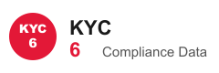
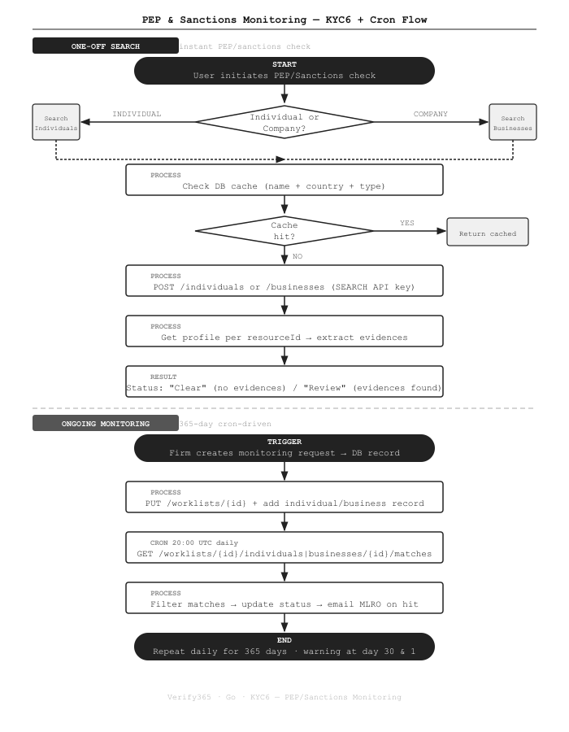

Automated PEP & Sanctions Monitoring with KYC6 in Go
How we built 365-day continuous PEP and sanctions monitoring into a Go compliance platform — using KYC6's dual API architecture, worklist management, and daily cron-driven checks.
The Problem
UK anti-money laundering regulations require law firms to screen clients not just at onboarding, but continuously throughout the relationship. A client who was clean last year may appear on a sanctions list today. We needed a system that could: run an instant check at onboarding, then keep watching quietly in the background for up to a year — and alert the firm's compliance officer the moment anything changes.
What We Built
Two complementary flows using the KYC6 API inside the Go backend of Verify365:
- One-off search — instant PEP/sanctions result at client onboarding
- Ongoing monitoring — 365-day worklist-based daily polling with MLRO alerts
How It Works

The Code
Dual API key client
KYC6 uses separate API keys and different base URLs for search vs monitoring. The client holds both and routes requests accordingly:
// thirdparty/kyc6/Kyc6.go
const THRESHOLD_VALUE = 98 // minimum match confidence (%)
type Kyc6Client struct {
Logger *zerolog.Logger
ApiUrl string
SearchApiKey string // KYC6_SEARCH_APIKEY
MonitorApiKey string // KYC6_MONITOR_APIKEY
database *db.Database
}
// Search API: uses base URL e.g. https://api.kyc6.com/individuals
func (c *Kyc6Client) MakeComplianceRequest(path, method, contentType string, body []byte) ([]byte, error) {
url := fmt.Sprintf(`%s/%s`, c.ApiUrl, path)
request, _ := http.NewRequest(method, url, bytes.NewBuffer(body))
request.Header.Add("x-api-key", c.SearchApiKey)
// ...
}
// Monitor API: uses base URL e.g. https://api.kyc6.com-monitor/worklists/...
func (c *Kyc6Client) MakeComplianceMonitorRequest(path, method, contentType string, body []byte) ([]byte, error) {
url := fmt.Sprintf(`%s-monitor/%s`, c.ApiUrl, path) // note: "-monitor" suffix
request, _ := http.NewRequest(method, url, bytes.NewBuffer(body))
request.Header.Add("x-api-key", c.MonitorApiKey)
// ...
}One-off search with DB cache
Searches are cached in the database to avoid duplicate API calls for the same name + country + type combination. Individual and company searches use different datasets and endpoints:
func (c *Kyc6Client) SearchIndividualProfile(searchTerm, year, countryCode string) ([]byte, error) {
// Check DB cache first (name + DOB year + country + type)
m := domain.KYC6{}
err := c.database.Where("name = ? AND date_of_birthday = ? AND country_code = ? AND type = ?",
searchTerm, year, countryCode, "individuals").First(&m).Error
if err == nil {
return []byte(*m.Response), nil // cache hit — no API call needed
}
// Build request — only include dob and countries if provided
reqMap := map[string]interface{}{
"name": searchTerm,
"datasets": enums.GetAllowedDatasetStringsForIndividual(), // PEP, SAN, RRE, REL...
"threshold": THRESHOLD_VALUE, // 98%
"matching": "fuzzy",
}
if year != "" {
reqMap["dobMatching"] = "exact"
reqMap["dob"] = year
}
if countryCode != "" {
reqMap["countryRequired"] = true
reqMap["countries"] = []string{countryCode}
}
rawDataBytes, _ := json.Marshal(reqMap)
body, err := c.MakeComplianceRequest("individuals", http.MethodPost, "application/json", rawDataBytes)
// Cache result in DB for future calls
res := string(body)
c.database.Create(&domain.KYC6{Name: searchTerm, DateOfBirthday: year, CountryCode: countryCode, Response: &res, Type: "individuals"})
return body, nil
}Extracting PEP status from results
After searching, we fetch the full profile for each match and check for evidences. Having evidences means the person is flagged — the status becomes "Review":
func (c *Kyc6Client) GetPEPSanction(firmID uuid.UUID, customer *domain.Customer, brand *domain.Brand) (map[string]interface{}, string) {
pepsStatus := "Review"
resp, err := c.SearchIndividualProfile(searchTerm, year, countryCode)
if err == nil {
json.Unmarshal(resp, &body)
results := body["results"].(map[string]interface{})
matches := results["matches"].([]interface{})
pepsStatus = "Clear" // assume clear until an evidence is found
for _, match := range matches {
matchMap := match.(map[string]interface{})
resourceId := matchMap["resourceId"].(string)
profileResp, _ := c.GetIndividualProfile(resourceId)
json.Unmarshal(profileResp, &profile)
evidences := profile["evidences"].([]interface{})
if len(evidences) > 0 {
pepsStatus = "Review" // at least one flagged profile
break
}
}
}
return body, pepsStatus // "Clear" or "Review"
}Creating a monitoring worklist
When ongoing monitoring is activated, we create a KYC6 worklist (once per firm) and add the client as a monitor record:
// Create the worklist (PUT is idempotent — safe to retry)
func (c *Kyc6Client) CreateWorklist(worklistId, name string, datasets []string) error {
if len(datasets) == 0 {
datasets = []string{"PEP", "SAN", "RRE", "REL", "POI", "DD", "INS", "SOE"}
}
reqBody := map[string]interface{}{
"name": name,
"datasets": datasets,
"dobMatching": "exact",
"threshold": THRESHOLD_VALUE, // 98%
"frequency": "daily",
}
rawData, _ := json.Marshal(reqBody)
url := fmt.Sprintf(`worklists/%s`, worklistId)
body, err := c.MakeComplianceMonitorRequest(url, http.MethodPut, "application/json", rawData)
// KYC6 returns "OK" as plain text on success (not JSON)
if strings.TrimSpace(string(body)) == "OK" {
return nil
}
return err
}
// Add individual to the worklist
func (c *Kyc6Client) CreateMonitorRecordIndividuals(worklistId, monitorRecordId, name, countryCode, year, city, gender string) error {
requestBody := map[string]interface{}{"name": name}
// KYC6 does NOT allow "countries" + "addresses" together — prefer addresses when city is known
if city != "" {
address := map[string]string{"city": city}
if countryCode != "" { address["geography"] = countryCode }
requestBody["addresses"] = []map[string]string{address}
} else if countryCode != "" {
requestBody["countries"] = []string{countryCode}
}
if year != "" { requestBody["dob"] = year }
rawData, _ := json.Marshal(requestBody)
url := fmt.Sprintf(`worklists/%s/individuals/%s`, worklistId, monitorRecordId)
_, err := c.MakeComplianceMonitorRequest(url, http.MethodPut, "application/json", rawData)
return err
}Daily cron job — check all monitored records
A cron job runs daily at 20:00 UTC. For each active monitoring record, it fetches the current matches from KYC6 and emails the MLRO if any evidence is found:
// In cron/CronService.go — registered at startup
c.AddFunc("0 20 * * *", func() {
pepSanctionMonitoringService.CheckAllMonitoringRecords()
})
// In services/PepSanctionMonitoringService.go
func (s *PepSanctionMonitoringService) CheckAllMonitoringRecords() {
// Fetch all active (non-expired) monitoring records from DB
var records []domain.PepSanctionMonitoring
s.db.Where("status = ? AND expires_at > ?", "active", time.Now()).Find(&records)
for _, record := range records {
// GET /worklists/{id}/individuals/{id}/matches
matches, err := s.kyc6Client.GetIndividualMonitorMatches(record.WorklistID, record.MonitorRecordID)
if err != nil {
continue
}
// Determine status from match evidences
newStatus := "Clear"
for _, match := range matches.Matches {
if len(match.Resource.Evidences) > 0 {
newStatus = "Review"
break
}
}
// Save report and notify MLRO if status changed to Review
if newStatus == "Review" {
s.saveReportAndNotifyMLRO(record, matches)
}
}
}Country code normalisation
KYC6 requires ISO alpha-2 country codes, but our data comes in many formats. A normalisation helper handles the conversion:
func (c *Kyc6Client) NormalizeCountryCode(countryCode string) string {
countryCode = strings.ToUpper(strings.TrimSpace(countryCode))
// Convert ISO alpha-3 → alpha-2 (e.g. "GBR" → "GB")
iso3To2 := map[string]string{
"GBR": "GB", "USA": "US", "FRA": "FR", "DEU": "DE", // ... etc
}
if converted, exists := iso3To2[countryCode]; exists {
countryCode = converted
}
// Normalise all UK country variants to "GB"
// (handles "england", "scotland", "wales", "uk", "united kingdom", etc.)
if utils.Contains(enums.UK_COUNTRY, strings.ToLower(countryCode)) {
countryCode = "GB"
}
// Return empty string for anything that's still not a 2-letter code
if len(countryCode) != 2 {
return ""
}
return countryCode
}Key Points
- Two separate API keys and base URLs. KYC6 splits search and monitoring into different API tiers. Routing to
c.ApiUrlvsc.ApiUrl + "-monitor"is the critical difference — getting it wrong means a 401 on the wrong endpoint. - Cache first, then API. Identical searches return cached results from the database. This prevents duplicate API charges and speeds up repeat lookups for the same client.
- Countries OR addresses — not both. KYC6 returns MAPI-217 if both
countriesandaddressesare set. When city is available, we useaddresseswithgeography; otherwise we fall back tocountries. - Plain text "OK" success response. KYC6's monitor API returns the string
"OK"on success, not JSON. Attempting to parse it as JSON silently fails — we handle both cases explicitly. - MLRO alerts + weekly reports. Three separate cron jobs handle the compliance communication: daily match checks, weekly summary emails, and expiry warnings at 30 and 1 day.
Stack
Building AML or compliance screening into your platform? Get in touch →